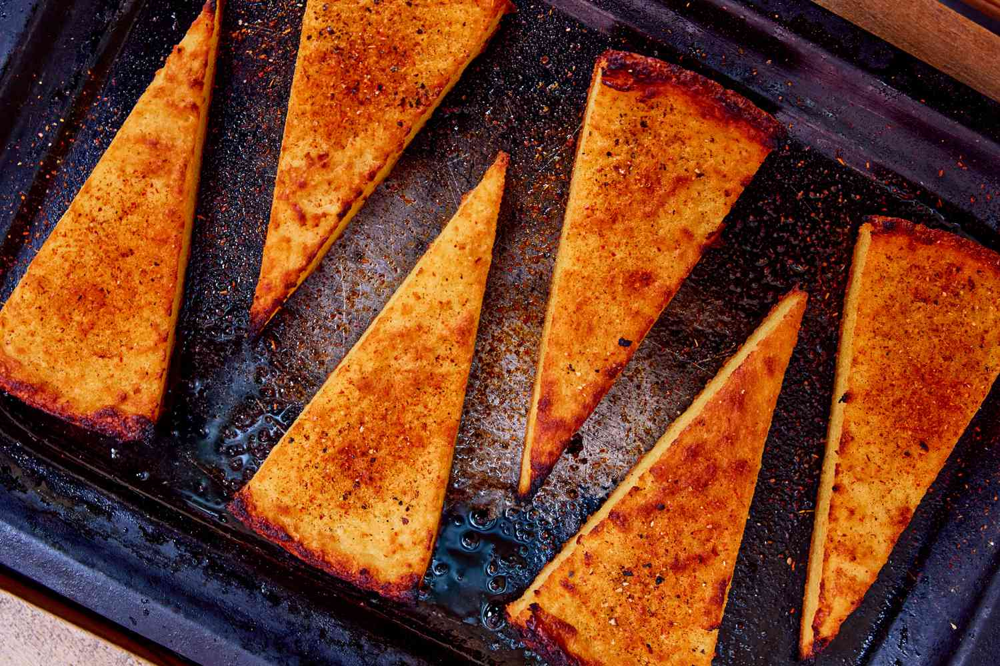

Fainá is a unique flatbread made with chickpea flour, black pepper, and lots of fresh herbs. It is extremely popular throughout Argentina and Uruguay. The most prevalent theory about its origin says that Genovese immigrants brought it to Buenos Aires and Montevideo in the early 20th century, and over time it became a popular food item in the country.
Meal prep time : 45 minutes
Servings : 6